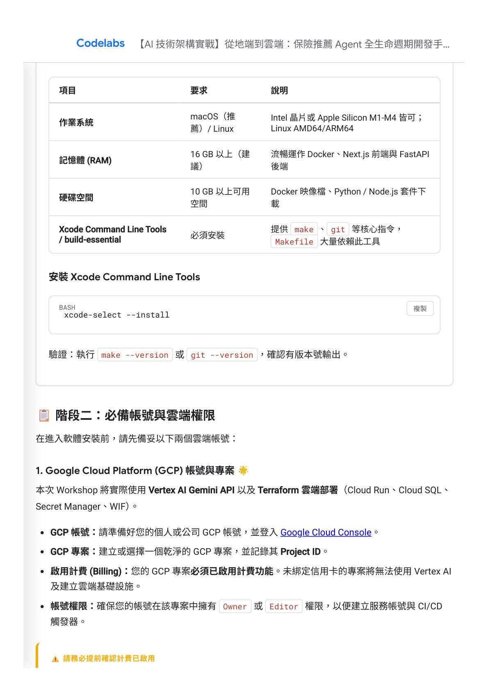
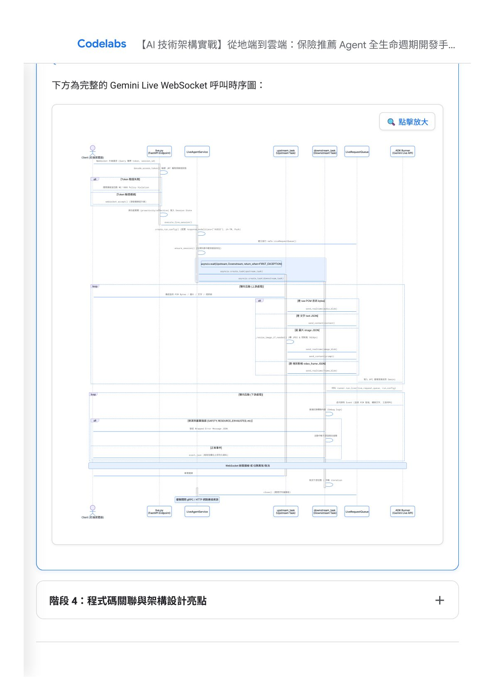
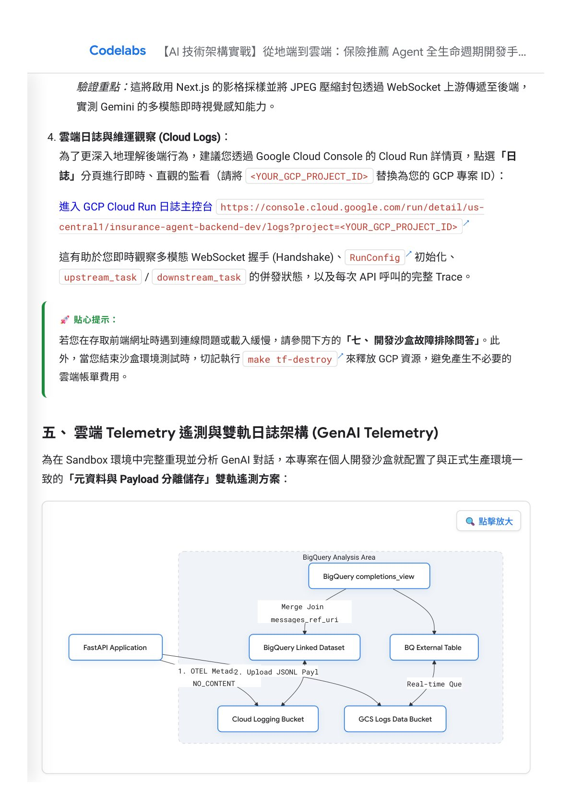
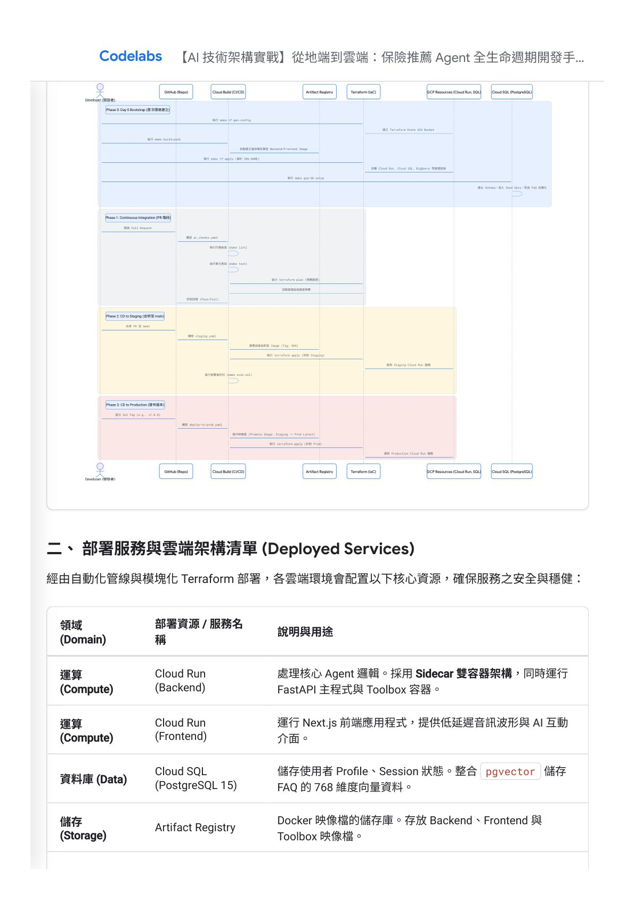

摘要
本 Workshop 是一份針對即時語音與多模態串流應用的 GCP 與 DevOps 整合實戰指南。以「保險推薦 Agent」為開發範例，講者 Chris (lastingyeh) 帶領學員實作具備生產級強健性的三支柱架構：基於 Next.js 15 的低延遲多模態前端、由 FastAPI 與 Google ADK 驅動並採 asyncio 非同步併行設計的 WebSocket 雙向串流後端，以及結合 PostgreSQL（含 pgvector）與 MCP Toolset 的企業級向量檢索資料庫。安全層面實作了 JWT 驗證、PII 敏感資料（如台灣身分證字號）去識別化與防竄改的雜湊鏈審計日誌。品質與運作觀測則結合了 Locust 壓測、Google ADK Eval-Fix 評估框架（LLM-as-a-Judge）與 OpenTelemetry 分散式追蹤。最終透過 Terraform、GitOps、Workload Identity Federation 與 Cloud Build，部署於 GCP 隔離的 Dev、Staging 與 Production 環境，呈現了完整的雲原生 AI 開發生命週期。
重點整理
- 系統採三支柱架構：Next.js 15 前端、FastAPI + Google ADK 後端、PostgreSQL + MCP Toolset 企業基礎設施
- 核心技術主軸為 WebSocket 多模態 Gemini Live 雙向串流生命週期，透過 asyncio 併行處理上游媒體輸入與下游模型回應
- 安全設計涵蓋 JWT 身份驗證、PII 正則遮蔽（如台灣身分證字號）與雜湊鏈防竄改審計日誌
- 品質保證結合傳統 Pytest 測試金字塔與 Google ADK 內建的 LLM-as-a-Judge 評估框架（Eval-Fix Loop）
- 透過 Terraform、Workload Identity Federation 與 Cloud Build 建立 Dev、Staging、Production 三階段隔離的自動化 CI/CD 部署管線
重點圖片／架構圖




系統全景與核心三支柱架構
本 Workshop 開場先建立整體系統認知：前端採用 Next.js 15 App Router，提供低延遲雙向串流的視覺化對話與儀表板介面，並透過自訂多模態 Hooks 協調音訊、視訊與螢幕共享的同步傳輸；後端服務基於 google-adk 框架封裝 Agent 實例，全站以 asyncio 非同步驅動；企業基礎設施則以 PostgreSQL 搭配 MCP Toolset，透過 SQL 商品搜尋與 Vertex AI 向量 FAQ 檢索（pgvector）確保資料可靠性。
WebSocket 多模態 Gemini Live 雙向串流核心實作
這是整場 Workshop 最核心的技術段落：LiveAgentService 透過安全握手驗證 JWT 後，建立 RunConfig 並以 asyncio 同時啟動上游任務（處理麥克風音訊、圖片、視訊影格）與下游任務（讀取模型回傳事件並序列化傳回瀏覽器），並在任一側斷線或出錯時，統一取消另一側任務並關閉 LiveRequestQueue，確保資源被安全回收。圖片與視訊影格會先經過縮放與 JPEG 轉換以降低延遲與錯誤率。
安全性、隱私保護與品質保證
系統實作多層次縱深防禦：所有 API 與 WebSocket 均需通過 JWT 驗證；PII 遮蔽模組以正則表達式偵測台灣身分證字號、Email、電話等敏感資訊並進行去識別化；審計日誌則以雜湊鏈設計，讓每筆記錄都包含前一節點的雜湊值，形成防竄改的稽核鏈。品質保證方面，除了 Pytest 單元、整合與 Locust 負載測試外，更導入 Google ADK 的 Eval 框架，以 LLM-as-a-Judge 針對核心對話、安全邊界、即時互動與會話記憶等五大主題進行量化評分。
營運觀測與雲端 Dev 沙盒部署
營運面整合 OpenTelemetry 分散式追蹤符合 GenAI 語意規範，搭配 Cloud Logging 與 GCS 的 Prompt/Response 隔離備份，並透過 BigQuery Agent Analytics Plugin 分析 Token 成本與工具耗時瓶頸。個人 Dev 沙盒部署則透過 Makefile 封裝的 Terraform 流程（tf-gen-config、build-push、tf-apply），自動化建立 Cloud Run、Cloud SQL 與 GCS 等雲端資源，並完成資料庫 Schema 初始化與 FAQ 向量嵌入匯入。
Staging/Production CI/CD 三階段自動化發布
進入團隊共享環境後，專案透過 GitOps 與 Workload Identity Federation（WIF）實現無金鑰的自動化部署：PR 階段觸發 pr_checks.yaml 執行程式碼檢查、單元測試與 Terraform Plan；合併至 main 分支後觸發 staging.yaml，建置映像檔並自動執行部署後 ADK 評估；建立 Git Tag 後則觸發 deploy-to-prod.yaml，將 Staging 映像檔直接晉升為 Production 版本，確保程式碼一致性，同時 Production 環境預設啟用高可用性與刪除保護設定。